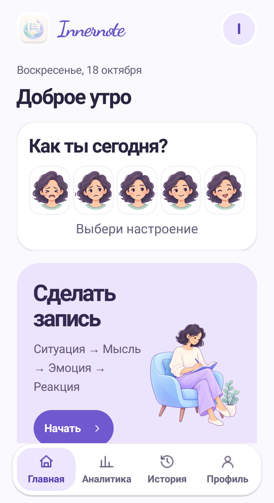
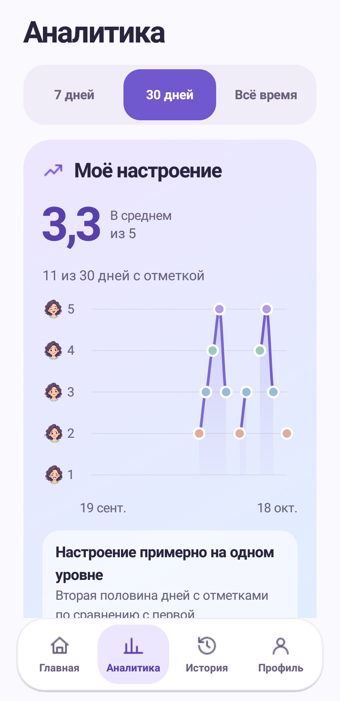

Понять, что произошло и что ты почувствовал.
Запись СМЭР связывает ситуацию, мысли, эмоции и реакции. Можно вернуться к записи позже, дополнить её и провести КПТ-разбор.
Для Android · Русский и English
Innernote — дневник настроения и мыслей с инструментами КПТ. Замечай своё состояние, разбирай сложные ситуации и сохраняй то, что помогает.
Основной дневник и практики доступны без аккаунта и сети.
Готовимся к публикации в Google Play

От быстрой отметки настроения до подробного разбора мысли. Выбирай инструмент под своё состояние.
Запись СМЭР связывает ситуацию, мысли, эмоции и реакции. Можно вернуться к записи позже, дополнить её и провести КПТ-разбор.
Отметь состояние, эмоции и жизненные контексты. История и аналитика помогут вернуться к этим наблюдениям.
Практики «Мне сейчас тяжело», карточки поддержки, экспозиции и репетиция разговора — рядом, когда хочется разобраться или подготовиться.
Также внутри: подготовка к встрече с психологом, PDF-отчёты и резервные копии. ИИ можно подключать по собственному запросу.
Наблюдать за собой
Аналитика собирает отметки настроения и результаты разбора мыслей в понятную картину. Без догадок о тех днях, когда ты ничего не записывал.

Аккаунт, облачная синхронизация и ИИ добавляют возможности. Для ведения основного дневника они не обязательны.
Записи сохраняются локально. Можно включить блокировку приложения биометрией или кодом устройства.
При входе доступна синхронизация поддерживаемых записей. История настроения остаётся на устройстве.
Для ответа передаётся контекст выбранного инструмента. Согласие на отправку текста можно отозвать в настройках.
Пока здесь можно узнать о возможностях приложения, обработке данных и способах связаться с разработчиком.
Связаться с поддержкой